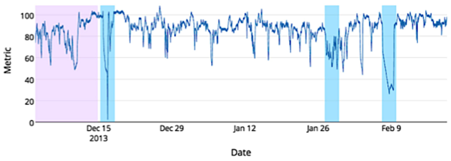
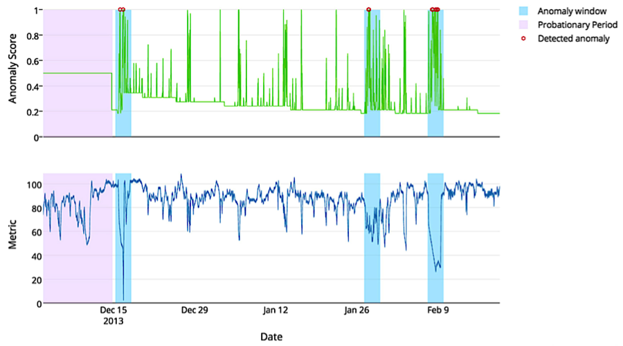

NAB - A Benchmark for Streaming Anomaly Detection
 Alexander Lavin•Software Engineer
Alexander Lavin•Software Engineer
Numenta Anomaly Benchmark
A Benchmark for Streaming Anomaly Detection
Data is in ever-increasing supply as sensors inhabit more and more of our world. Examples abound from health data tracked by pacemakers and fitness wearables, to temperature sensors in aircraft engines and mobile phones. These sensors provide important information in real-time, streaming data. That is, time-series data, where there is a natural temporal ordering in the successive measurements made over a time interval.
Take a look at Figure 1 below, an example of time-series data from a sensor. The plot shows scalar values over time for an unknown metric. Can you guess if the metric is blood glucose level for a diabetes patient, stock volume for a Fortune 500 company, or something else? It’s difficult to tell, yet it’s apparent the plot shows data anomalies, or deviations from the normal pattern.

Figure 1 – An example data file from the NAB corpus; data from monitoring the temperature of an internal component of a large, expensive, industrial machine. The three blue regions represent anomaly windows, and the purple region is the detector’s probationary period. For details on these and more NAB components, please explore the NAB wiki[1].
Looking at the entire plot, these anomalies are easily recognized after-the-fact but identifying anomalies long after they occur isn’t acceptable. Yet many anomaly detection methods run in batch mode, where the data is collected and processed after the fact. Real-time data processing, on the other hand, calls for continual input, process, and output of data. A real-world anomaly detector should be required to process streaming data, learn continuously, and make accurate detections as soon as possible.
At Numenta we’ve built a robust, real-time anomaly detector using Hierarchical Temporal Memory (HTM)[2]. Our Grok application is great demo of the algorithm in action on server metrics data[3]. Other real-time anomaly detectors are out there, namely at Yahoo and Twitter who both recently announced their activities in real-time anomaly detection[4][5]. But how can one truly discern whether or not these algorithms are up to the task of streaming anomaly detection? Sure HTM does great on detecting anomalies in Amazon Web Services metrics with Grok, but what about the other sensory domains?
Enter the Numenta Anomaly Benchmark (NAB), an open-source benchmark we’re developing for the evaluation of real-time anomaly detection algorithms. The NAB dataset contains streaming data samples, aiming to capture the difficulties of real-time anomaly detection, across varying real-world domains. A detector run on this dataset is subject to evaluation by the NAB scoring method. To score well on NAB, anomaly detection algorithms should: run in unsupervised mode, process real-time data, learn continuously, reliably detect anomalies, and detect them as early as possible. Detailed descriptions of all NAB components can be found in the NAB whitepaper posted in the wiki[1]. Figure 2 below shows the Numenta detector on the sample data file of Figure 1, where the algorithm accurately detected all three anomalies with no false positives.

Figure 2 – NAB results for the Numenta detector on a data file representing machine component temperature readings. The detections resulted in all three true positives, and no false positive nor false negatives.
We’re currently in a “beta” phase, working with a few select companies and researchers to improve both the benchmark dataset and the scoring methods, before submitting the benchmark for publication. Our aim during this phase is to collaborate with businesses that need real-time anomaly detection and researchers working on novel algorithms. Part of the value of the benchmark is a data set consisting of diverse sensory data streams with real labeled anomalies. As such we’re particularly interested in real-world data files with actual anomalies to add to the dataset.
Call For Participation!
So far we’ve received some great feedback, but there’s still a ways to go. You can help. Please check out NAB[6] for yourself. Do you have data to contribute? Great, we’d love to include it in the benchmark, as long as your data meets the following criteria:
- Real-world, time-series data
- Labeled or known anomalies
- Minimum 1000 records per data file (more would be ideal)
- Data records must be
- from a continuously streaming source
- in chronological order
- at roughly equal time intervals
- Scalar metric(s)
If you have data you might be able to contribute, are interested in the benchmark, or have questions, please contact us at nab@numenta.org.
No real-world anomaly detector is perfect, but which is best? Where do algorithms make good and poor detections? NAB will be able to answer these questions, providing the world of data analysis with a much-needed benchmark for this very important class of algorithms.
References
- [1] https://github.com/numenta/NAB/wiki
- [2] /assets/pdf/whitepapers/Numenta%20White%20Paper%20-%20Science%20of%20Anomaly%20Detection.pdf
- [3] http://grokstream.com/
- [4] http://labs.yahoo.com/news/announcing-a-benchmark-dataset-for-time-series-anomaly-detection/
- [5] https://blog.twitter.com/2015/introducing-practical-and-robust-anomaly-detection-in-a-time-series
- [6] https://github.com/numenta/NAB/
Alexander Lavin•Software Engineer